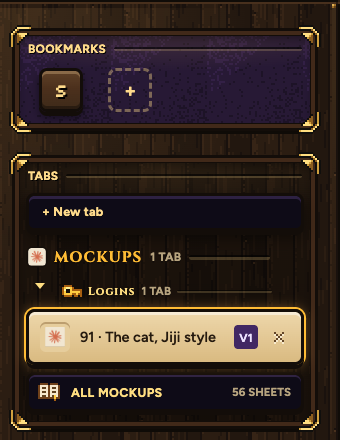
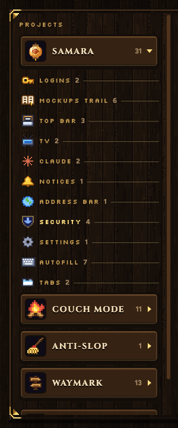

Every mockup in a tab of its own, opened from the trail in your left rail. Every picture here is Samara itself, running on a copy of your trail.

ALL MOCKUPS, under your open mockups
The book opens the Mockups tab. The count is every sheet outside the Archive. The trail itself holds only the mockups you have open, under their topic's icon.
In your window, in place of the page, like Settings
Projects and topics on the left, that topic's sheets in the middle, the one you pick big on the right with every version under it. Open puts that version in a tab of its own.

Each project and topic has its own
Samara's own art where it has some: the lantern, the shield for Security, Claude's mark, the broom for Anti-slop. New pixel icons in the same style for the rest: a campfire for Couch Mode, a signpost for Waymark, a bell for Notices, a cog for Settings, a TV, a game pad for the Launcher, a book for the Mockups trail. The same icon shows on a topic's open tabs in the left rail.